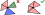

𝛼-shape filter
The package also provides the ability to apply the \(\alpha\)-shape filter (see Introduction) during triangulation, i.e., to remove any triangle whose circumradius \(R\) satisfies the condition \(R^2 \ge \alpha^{-1}\). This can be particularly useful when reconstructing meshes from point clouds without introducing additional constraints.
using var positions = new NativeArray<double2>(..., Allocator.Persistent);
using var triangulator = new Triangulator(Allocator.Persistent)
{
Input = { Positions = positions },
Settings = { UseAlphaShapeFilter = true, AlphaShapeSettings = { Alpha = 0.1f, ... }},
};
triangulator.Run();
Additional settings
Protect points
By default, the \(\alpha\)-shape filter can remove any triangle, which may result in some input points not being associated with any triangle.
To prevent this, use the ProtectPoints option:
triangulator.Settings.AlphaShapeSettings.ProtectPoints = true;
Enabling this option ensures that all input points are assigned to at least one triangle.1
Protect constraints
By default, the \(\alpha\)-shape filter may remove triangles even if they include constrained edges.
Use the ProtectConstraints setting to ensure that triangles with any constrained edge are not removed:
triangulator.Settings.AlphaShapeSettings.ProtectConstraints = true;
Prevent windmills
Using the \(\alpha\)-shape filter may sometimes produce windmill-like triangle structures. Such a structure occurs when the triangles connected to a single point can be grouped into more than one connected component (see example below):
By default, using \(\alpha\)-shape filter can produce windmill like triangle structures. Such a structure occurs when for a single point one can group point's triangles into more than one colored group, see example below:

This may be undesirable, as it can alter the mesh's topology, coloring, or continuity (see also Utilities)
To prevent these structures from forming, enable the PreventWindmills setting
triangulator.Settings.AlphaShapeSettings.PreventWindmills = true;
-
This guarantee only applies to triangles removed by this feature.↩